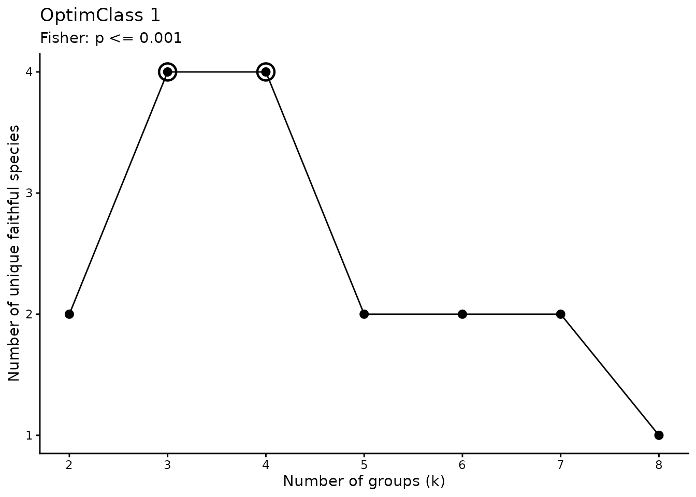
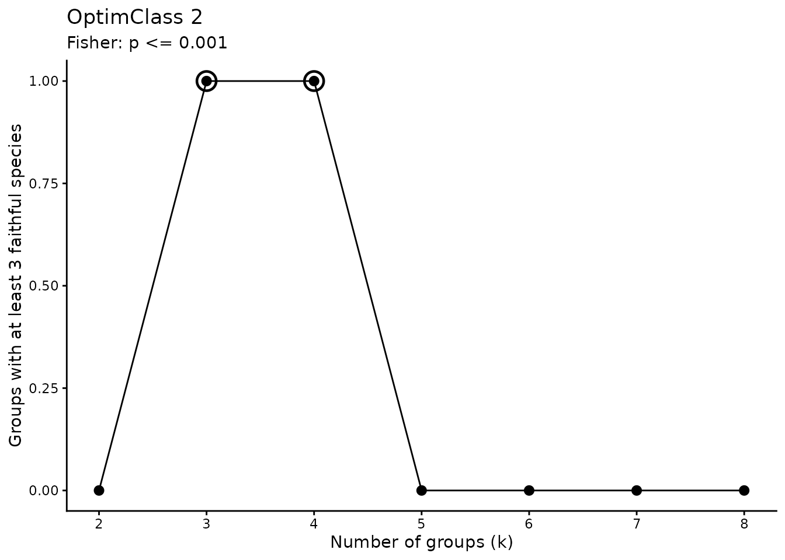
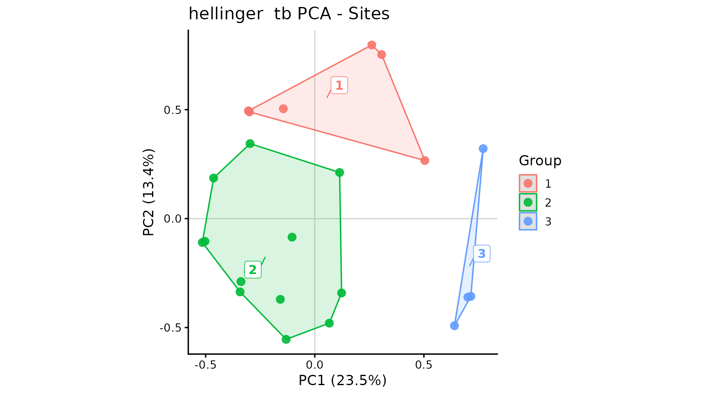
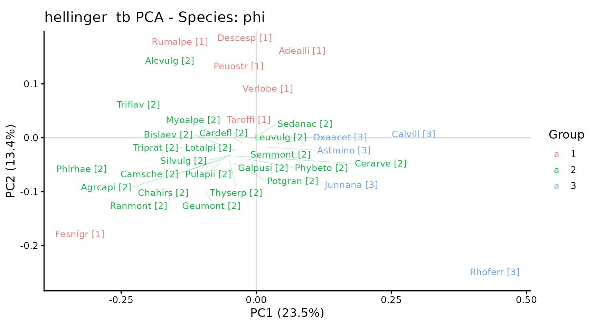

Vegetation classification: a phytosociological approach
Marco Pittarello
Source:vignettes/TUTORIAL_3_-_Cluster_metodo_fitosociologico.Rmd
TUTORIAL_3_-_Cluster_metodo_fitosociologico.RmdThis vignette illustrates classification using modified TWINSPAN and selection of the number of groups using OptimClass. The resulting groups are then described using Indicator Species Analysis (ISA), the phi coefficient, tb-PCA, and a synoptic table.
The example uses only iPastoralist::data. For
this example, survey values are assumed to represent percentage
cover, although the demonstration dataset was originally
organised as frequencies of occurrence. This assumption illustrates the
workflow; it is not a methodological conversion from FO to cover. Real
applications require observed cover values and careful consideration of
the measurement scale.
2. Preparing cover data
data_example <- as.data.frame(iPastoralist::data)
data_example <- data_example[, c(2, 7:30)]
cover <- iPastoralist::vegetation_abundance(
database = data_example,
species.cover.coefficient = 4,
method = "SC_fo_occ"
)
# Rows = surveys; columns = species.
veg <- t(cover)
dim(veg)
#> [1] 24 152
knitr::kable(veg[seq_len(min(6L, nrow(veg))), seq_len(min(6L, ncol(veg)))])| Achmacr | Achmill | Achmosc | Acialpi | Acolama | Adealli | |
|---|---|---|---|---|---|---|
| R1 | 0 | 0 | 0 | 0 | 0.3 | 0.0 |
| R2 | 0 | 0 | 0 | 0 | 0.0 | 0.3 |
| R3 | 0 | 0 | 0 | 0 | 0.0 | 0.0 |
| R4 | 0 | 0 | 0 | 0 | 0.0 | 0.0 |
| R5 | 0 | 0 | 0 | 0 | 0.0 | 0.0 |
| R6 | 0 | 0 | 0 | 0 | 0.0 | 0.0 |
3. Modified TWINSPAN and OptimClass
TWINSPAN uses pseudospecies cut levels to represent abundances. Here,
the cover thresholds are 0, 2, 5,
10, and 20. Modified TWINSPAN prioritises
splitting the most heterogeneous group. OptimClass compares partitions
based on faithful species: OptimClass 1 considers the total number of
faithful species, whereas OptimClass 2 considers the number of groups
containing a sufficient number of faithful species (Tichý et al.,
2010).
The significance threshold and minimum number of faithful species are analysis parameters that should be reported and assessed for your dataset. The range of group numbers examined here is also limited by the small size of the demonstration dataset.
min_size <- 2L
k_values <- 2:8
cut_levels <- c(0, 2, 5, 10, 20)
p_threshold <- 1e-3
min_faithful <- 3L
select_by <- "optimclass2" # alternative: "optimclass1"In the ecan backend, min_size controls
which groups can be split further; on its own, it does not guarantee
that every final group contains at least that many surveys. Always check
final group sizes after classification.
twinspan_res <- twinspan_optimclass_ecan(
veg = veg,
cut_levels = cut_levels,
min_size = min_size,
k_values = k_values,
p_threshold = p_threshold,
min_faithful = min_faithful,
version = "fast",
select_by = select_by,
show_plots = TRUE
)

#>
#> --- TWINSPAN + OPTIMCLASS ---
#> Version: fast
#> OptimClass 1, optimal k values: 3, 4
#> OptimClass 2, optimal k values: 3, 4
#> Selected partition:3groups (optimclass2)
#> Unique faithful species: 4
knitr::kable(twinspan_res$results)| k | optimclass1 | optimclass2 | prop_good_clusters | min_group_size | best_optim1 | best_optim2 |
|---|---|---|---|---|---|---|
| 2 | 2 | 0 | 0.0000000 | 4 | FALSE | FALSE |
| 3 | 4 | 1 | 0.3333333 | 4 | TRUE | TRUE |
| 4 | 4 | 1 | 0.2500000 | 3 | TRUE | TRUE |
| 5 | 2 | 0 | 0.0000000 | 3 | FALSE | FALSE |
| 6 | 2 | 0 | 0.0000000 | 3 | FALSE | FALSE |
| 7 | 2 | 0 | 0.0000000 | 1 | FALSE | FALSE |
| 8 | 1 | 0 | 0.0000000 | 1 | FALSE | FALSE |
twinspan_res$best_k
#> $optimclass1
#> [1] 3 4
#>
#> $optimclass2
#> [1] 3 4
twinspan_res$selected_k
#> [1] 3Also examine the faithful species of the selected solution. Species used by OptimClass to select a partition may differ from those subsequently selected using IndVal or phi: the criteria and thresholds are not interchangeable.
twinspan_res$faithful_by_group
#> $G1
#> character(0)
#>
#> $G2
#> [1] "Cerarve" "Myoalpe" "Phybeto" "Potgran"
#>
#> $G3
#> character(0)
head(twinspan_res$faithful_species)
#> k group species p_value
#> 3 3 G2 Cerarve 1.458249e-04
#> 4 3 G2 Myoalpe 7.189271e-05
#> 5 3 G2 Phybeto 3.701710e-04
#> 6 3 G2 Potgran 5.103872e-044. Selecting the partition and aligning groups
The default solution is the one returned by OptimClass. If no single
valid selected_k is returned, examine results
and best_k and choose a solution explicitly. For example, a
maximum OptimClass 2 score of zero does not demonstrate that the groups
meet the desired faithful-species requirement.
n.cluster <- twinspan_res$selected_k
groups_raw <- as.data.frame(twinspan_res$classification)To assess an alternative solution, run the following chunk instead of
the previous one. It is excluded from normal rendering with
eval = FALSE to avoid automatically overwriting the
OptimClass selection. After running it manually, rerun all subsequent
chunks, starting with group alignment.
k_custom <- 4L
twin_ecan <- ecan::twinspan(
x = veg,
modified = TRUE,
n_clusters = k_custom,
cut_levels = cut_levels,
min_size = min_size,
max_depth = 6,
polish = "hill",
species = FALSE
)
groups_raw <- as.data.frame(twin_ecan$classification[, c("stand", "group")])
n.cluster <- length(unique(groups_raw$group))
if (n.cluster != k_custom) {
stop("TWINSPAN did not reach the requested number of groups.")
}
# Convert using the ecan S3 method, without calling internal functions.
hc_ecan <- stats::as.hclust(twin_ecan)
plot(hc_ecan, hang = -1, sub = "", main = "TWINSPAN - alternative solution")Retain the partition in classification: do not derive a
new classification by applying cutree() to the displayed
dendrogram. Recode group labels as 1, 2, etc.,
and store them as a factor with the same level order for ISA, phi, PCA,
and the synoptic table. This ensures that the version of
synoptic_table() that adds a G prefix to
frequency columns produces G1, G2, etc.
groups <- groups_raw[
match(rownames(veg), as.character(groups_raw$stand)),
c("stand", "group"),
drop = FALSE
]
rownames(groups) <- NULL
# Retain the mapping to the original group labels.
original_group_levels <- levels(factor(groups$group))
group_key <- data.frame(
original_group = original_group_levels,
group = seq_along(original_group_levels)
)
groups$group <- factor(
match(as.character(groups$group), original_group_levels),
levels = seq_along(original_group_levels)
)
stopifnot(
identical(rownames(veg), as.character(groups$stand)),
!anyNA(groups$group),
nlevels(droplevels(groups$group)) == n.cluster
)
knitr::kable(group_key)| original_group | group |
|---|---|
| G1 | 1 |
| G2 | 2 |
| G3 | 3 |
knitr::kable(groups)| stand | group |
|---|---|
| R1 | 2 |
| R2 | 1 |
| R3 | 1 |
| R4 | 1 |
| R5 | 2 |
| R6 | 2 |
| R7 | 2 |
| R8 | 2 |
| R9 | 2 |
| R10 | 2 |
| R11 | 2 |
| R12 | 2 |
| R13 | 3 |
| R14 | 1 |
| R15 | 2 |
| R16 | 3 |
| R17 | 1 |
| R18 | 2 |
| R19 | 1 |
| R20 | 2 |
| R21 | 2 |
| R22 | 2 |
| R23 | 3 |
| R24 | 3 |
table(groups$group)
#>
#> 1 2 3
#> 6 14 45. Indicator Species Analysis
Calculate IndVal from cover data, using
func = "IndVal.g" to account for unequal group sizes.
Setting duleg = TRUE searches for species associated with
individual groups, excluding combinations of groups.
The 9999 permutations are shared with the phi analysis. They are unrestricted in this example; a blocked design or repeated surveys require constraints consistent with the sampling design.
set.seed(123)
nperm <- 499L #to be fast here (better 9999)
indval <- indicspecies::multipatt(
x = veg,
cluster = groups$group,
func = "IndVal.g",
duleg = TRUE,
permutations = nperm
)
summary(indval, alpha = 0.05, indvalcomp = TRUE)
#>
#> Multilevel pattern analysis
#> ---------------------------
#>
#> Association function: IndVal.g
#> Significance level (alpha): 0.05
#>
#> Total number of species: 152
#> Selected number of species: 34
#> Number of species associated to 1 group: 34
#> Number of species associated to 2 groups: 0
#>
#> List of species associated to each combination:
#>
#> Group 1 #sps. 7
#> A B stat p.value
#> Peuostr 0.9883 0.8333 0.908 0.005 **
#> Rumalpe 0.7240 1.0000 0.851 0.025 *
#> Adealli 1.0000 0.6667 0.816 0.015 *
#> Verlobe 0.9955 0.6667 0.815 0.015 *
#> Luzalpi 0.9571 0.6667 0.799 0.040 *
#> Descesp 0.9908 0.5000 0.704 0.025 *
#> Taroffi 0.8750 0.5000 0.661 0.035 *
#>
#> Group 2 #sps. 20
#> A B stat p.value
#> Myoalpe 0.9923 0.9286 0.960 0.005 **
#> Chahirs 0.9859 0.9286 0.957 0.005 **
#> Camsche 0.9271 0.9286 0.928 0.015 *
#> Ranmont 0.9209 0.9286 0.925 0.010 **
#> Fesnigr 0.8458 1.0000 0.920 0.005 **
#> Lotalpi 0.9293 0.8571 0.892 0.015 *
#> Cerarve 1.0000 0.7857 0.886 0.015 *
#> Geumont 0.9028 0.8571 0.880 0.010 **
#> Triprat 0.8862 0.8571 0.872 0.020 *
#> Antalpi 0.8762 0.8571 0.867 0.005 **
#> Phybeto 0.8743 0.8571 0.866 0.050 *
#> Potgran 1.0000 0.7143 0.845 0.020 *
#> Silvulg 0.8854 0.7857 0.834 0.035 *
#> Agrcapi 0.6929 1.0000 0.832 0.010 **
#> Galpusi 1.0000 0.6429 0.802 0.045 *
#> Pulapii 1.0000 0.6429 0.802 0.035 *
#> Phlrhae 0.6327 1.0000 0.795 0.015 *
#> Cardefl 0.9680 0.5714 0.744 0.050 *
#> Bislaev 1.0000 0.5000 0.707 0.045 *
#> Leuvulg 1.0000 0.5000 0.707 0.020 *
#>
#> Group 3 #sps. 7
#> A B stat p.value
#> Rhoferr 0.8543 1.0000 0.924 0.005 **
#> Junnana 0.9965 0.7500 0.864 0.015 *
#> Calvill 0.9209 0.7500 0.831 0.015 *
#> Oxaacet 1.0000 0.5000 0.707 0.030 *
#> Astmino 0.6632 0.7500 0.705 0.050 *
#> Arnmont 0.9790 0.5000 0.700 0.025 *
#> Gymdryo 0.9333 0.5000 0.683 0.035 *
#> ---
#> Signif. codes: 0 '***' 0.001 '**' 0.01 '*' 0.05 '.' 0.1 ' ' 1The A.g component describes indicator specificity,
whereas B describes the frequency of the species within the
group. The stat value returned by multipatt()
is the square root of IndVal.
6. Phi coefficient
For phi, convert cover values to presence/absence. With
func = "r.g", the association is adjusted for unequal group
sizes. Occasional species with a cover value of 0.3 are therefore
considered present.
veg_pa <- 1L * (veg > 0)
set.seed(123)
phi <- indicspecies::multipatt(
x = veg_pa,
cluster = groups$group,
func = "r.g",
duleg = TRUE,
permutations = nperm
)
summary(phi, alpha = 0.05)
#>
#> Multilevel pattern analysis
#> ---------------------------
#>
#> Association function: r.g
#> Significance level (alpha): 0.05
#>
#> Total number of species: 152
#> Selected number of species: 35
#> Number of species associated to 1 group: 35
#> Number of species associated to 2 groups: 0
#>
#> List of species associated to each combination:
#>
#> Group 1 #sps. 7
#> stat p.value
#> Adealli 0.756 0.005 **
#> Verlobe 0.691 0.035 *
#> Descesp 0.557 0.030 *
#> Taroffi 0.557 0.040 *
#> Rumalpe 0.555 0.015 *
#> Peuostr 0.553 0.040 *
#> Fesnigr 0.408 0.015 *
#>
#> Group 2 #sps. 23
#> stat p.value
#> Cerarve 0.842 0.005 **
#> Myoalpe 0.828 0.005 **
#> Potgran 0.791 0.010 **
#> Galpusi 0.739 0.025 *
#> Pulapii 0.739 0.010 **
#> Phybeto 0.715 0.005 **
#> Geumont 0.665 0.005 **
#> Lotalpi 0.665 0.005 **
#> Triprat 0.665 0.005 **
#> Triflav 0.653 0.005 **
#> Camsche 0.640 0.005 **
#> Ranmont 0.640 0.005 **
#> Bislaev 0.632 0.020 *
#> Leuvulg 0.632 0.010 **
#> Semmont 0.632 0.025 *
#> Thyserp 0.632 0.015 *
#> Silvulg 0.603 0.015 *
#> Phlrhae 0.564 0.005 **
#> Chahirs 0.562 0.010 **
#> Cardefl 0.534 0.045 *
#> Sedanac 0.534 0.045 *
#> Alcvulg 0.500 0.010 **
#> Agrcapi 0.378 0.020 *
#>
#> Group 3 #sps. 5
#> stat p.value
#> Junnana 0.700 0.015 *
#> Calvill 0.633 0.030 *
#> Oxaacet 0.632 0.030 *
#> Rhoferr 0.564 0.045 *
#> Astmino 0.544 0.045 *
#> ---
#> Signif. codes: 0 '***' 0.001 '**' 0.01 '*' 0.05 '.' 0.1 ' ' 1Ubiquitous species may have undefined phi values. Keep the
phi object with the species names and order of the original
matrix, without manually reordering or filtering phi$sign
before building the synoptic table.
indval_table <- data.frame(
species = rownames(indval$sign),
indval$sign,
row.names = NULL,
check.names = FALSE
)
indval_table$group <- levels(groups$group)[indval_table$index]
indval_table$IndVal <- indval_table$stat^2
indval_table$q_BH <- p.adjust(indval_table$p.value, method = "BH")
phi_table <- data.frame(
species = rownames(phi$sign),
phi$sign,
row.names = NULL,
check.names = FALSE
)
phi_table$group <- levels(groups$group)[phi_table$index]
phi_table$q_BH <- p.adjust(phi_table$p.value, method = "BH")
knitr::kable(head(indval_table[order(indval_table$p.value), ], 10), digits = 3)| species | s.1 | s.2 | s.3 | index | stat | p.value | group | IndVal | q_BH | |
|---|---|---|---|---|---|---|---|---|---|---|
| 16 | Antalpi | 0 | 1 | 0 | 2 | 0.867 | 0.005 | 2 | 0.751 | 0.126 |
| 39 | Chahirs | 0 | 1 | 0 | 2 | 0.957 | 0.005 | 2 | 0.916 | 0.126 |
| 56 | Fesnigr | 0 | 1 | 0 | 2 | 0.920 | 0.005 | 2 | 0.846 | 0.126 |
| 86 | Myoalpe | 0 | 1 | 0 | 2 | 0.960 | 0.005 | 2 | 0.921 | 0.126 |
| 91 | Peuostr | 1 | 0 | 0 | 1 | 0.908 | 0.005 | 1 | 0.824 | 0.126 |
| 109 | Rhoferr | 0 | 0 | 1 | 3 | 0.924 | 0.005 | 3 | 0.854 | 0.126 |
| 7 | Agrcapi | 0 | 1 | 0 | 2 | 0.832 | 0.010 | 2 | 0.693 | 0.133 |
| 66 | Geumont | 0 | 1 | 0 | 2 | 0.880 | 0.010 | 2 | 0.774 | 0.133 |
| 106 | Ranmont | 0 | 1 | 0 | 2 | 0.925 | 0.010 | 2 | 0.855 | 0.133 |
| 6 | Adealli | 1 | 0 | 0 | 1 | 0.816 | 0.015 | 1 | 0.667 | 0.133 |
| species | s.1 | s.2 | s.3 | index | stat | p.value | group | q_BH | |
|---|---|---|---|---|---|---|---|---|---|
| 6 | Adealli | 1 | 0 | 0 | 1 | 0.756 | 0.005 | 1 | 0.069 |
| 25 | Camsche | 0 | 1 | 0 | 2 | 0.640 | 0.005 | 2 | 0.069 |
| 37 | Cerarve | 0 | 1 | 0 | 2 | 0.842 | 0.005 | 2 | 0.069 |
| 66 | Geumont | 0 | 1 | 0 | 2 | 0.665 | 0.005 | 2 | 0.069 |
| 81 | Lotalpi | 0 | 1 | 0 | 2 | 0.665 | 0.005 | 2 | 0.069 |
| 86 | Myoalpe | 0 | 1 | 0 | 2 | 0.828 | 0.005 | 2 | 0.069 |
| 93 | Phlrhae | 0 | 1 | 0 | 2 | 0.564 | 0.005 | 2 | 0.069 |
| 94 | Phybeto | 0 | 1 | 0 | 2 | 0.715 | 0.005 | 2 | 0.069 |
| 106 | Ranmont | 0 | 1 | 0 | 2 | 0.640 | 0.005 | 2 | 0.069 |
| 141 | Triprat | 0 | 1 | 0 | 2 | 0.665 | 0.005 | 2 | 0.069 |
The q_BH columns provide a separate Benjamini-Hochberg
adjustment for each index. The summaries, tb-PCA, and synoptic table in
this example follow the interfaces of the functions illustrated and use
unadjusted p-values with alpha = 0.05. Keep this
distinction explicit when describing the method.
Because groups are derived from the same data, ISA and phi provide an exploratory characterisation of the classification, rather than independent validation or automatic assignment to phytosociological associations.
7. tb-PCA
Compute PCA on Hellinger-transformed cover data. The transformation
applies only to the ordination: veg retains the original
cover values for classification, ISA, and the synoptic table. Display
species selected using phi at alpha = 0.05.
pca <- tb_pca_plot(
veg = veg,
groups = groups,
transformation = "hellinger", # alternative: "chord"
axes = c(1, 2),
area = "hull", # "hull", "ellipse", or "none"
indval = indval,
phi = phi,
alpha = 0.05,
species = "phi", # "indval" or "ordiselect"
ablim = 0.3,
fitlim = 0.8,
freq = FALSE,
label_groups = TRUE,
segment.alpha_labelSpe = 0.3,
segment.size_labelSpe = 0.3
)
pca$plot_sites
pca$plot_species
Convex hulls describe the distribution of surveys in the ordination plane and are not confidence intervals. Interpret the plots alongside the variance explained by the axes and the composition of the groups.
pca$variance
#> PC1 PC2 PC3 PC4 PC5 PC6 PC7 PC8
#> 23.488587 13.406154 9.954948 8.380961 6.260246 5.039406 4.712287 4.323490
#> PC9 PC10 PC11 PC12 PC13 PC14 PC15 PC16
#> 3.515914 3.068504 2.780572 2.386132 2.187248 1.913238 1.723395 1.681543
#> PC17 PC18 PC19 PC20 PC21 PC22 PC23
#> 1.246019 0.935621 0.771616 0.731182 0.642876 0.484845 0.365215
head(pca$sites)
#> stand x y group
#> R1 R1 -0.1314824 -0.55416009 2
#> R2 R2 -0.1442085 0.50428595 1
#> R3 R3 -0.2994681 0.48959336 1
#> R4 R4 -0.3041198 0.49455601 1
#> R5 R5 -0.5034762 -0.10429268 2
#> R6 R6 -0.1040882 -0.08507569 2
head(pca$species)
#> species x y group
#> Adealli Adealli 0.05351652 0.14810718 1
#> Agrcapi Agrcapi -0.05776389 -0.03908370 2
#> Alcvulg Alcvulg -0.18558879 0.12936321 2
#> Astmino Astmino 0.01702381 -0.01739060 3
#> Bislaev Bislaev -0.03698051 -0.02450444 2
#> Calvill Calvill 0.26594510 0.02080365 3
pca$selected_species
#> [1] "Adealli" "Agrcapi" "Alcvulg" "Astmino" "Bislaev" "Calvill" "Camsche"
#> [8] "Cardefl" "Cerarve" "Chahirs" "Descesp" "Fesnigr" "Galpusi" "Geumont"
#> [15] "Junnana" "Leuvulg" "Lotalpi" "Myoalpe" "Oxaacet" "Peuostr" "Phlrhae"
#> [22] "Phybeto" "Potgran" "Pulapii" "Ranmont" "Rhoferr" "Rumalpe" "Sedanac"
#> [29] "Semmont" "Silvulg" "Taroffi" "Thyserp" "Triprat" "Triflav" "Verlobe"8. Synoptic table
Build the synoptic table from the original cover values and the partition already used for ISA, phi, and PCA. The operational definitions in this example are:
- diagnostic: phi of at least 0.25 and an unadjusted p-value no greater than 0.05;
- constant: present in at least 40% of surveys within the group;
- dominant: cover of at least 25% in at least 50% of surveys within the group.
The last definition corresponds to
dominance_rule = "high_cover_frequency". It does not simply
mean a mean cover of at least 25% within the group. The three categories
may overlap.
stopifnot(
identical(rownames(phi$sign), colnames(veg)),
identical(as.character(phi$cluster), as.character(groups$group))
)
tab_sinottica <- synoptic_table(
veg = veg,
groups = groups$group,
phi = phi,
alpha = 0.05,
phi_min = 0.25,
constancy_min = 40,
dominant_freq_min = 50,
dominant_cover_min = 25,
include = c("diagnostic", "constant", "dominant"),
dominance_rule = "high_cover_frequency"
)
knitr::kable(head(tab_sinottica$synoptic, 20))| group | species | diagnostic | phi | p.value | frequency | constant | high_cover_frequency | max_cover | dominant | G1 | G2 | G3 |
|---|---|---|---|---|---|---|---|---|---|---|---|---|
| 1 | Rumalpe | TRUE | 0.555 | 0.015 | 100.0 | TRUE | 16.7 | 64.0 | FALSE | 100.0 | 85.7 | 0 |
| 1 | Fesnigr | TRUE | 0.408 | 0.015 | 100.0 | TRUE | 16.7 | 32.0 | FALSE | 100.0 | 100.0 | 25 |
| 1 | Peuostr | TRUE | 0.553 | 0.040 | 83.3 | TRUE | 16.7 | 48.0 | FALSE | 83.3 | 50.0 | 0 |
| 1 | Adealli | TRUE | 0.756 | 0.005 | 66.7 | TRUE | 16.7 | 32.0 | FALSE | 66.7 | 0.0 | 0 |
| 1 | Verlobe | TRUE | 0.691 | 0.035 | 66.7 | TRUE | 0.0 | 20.0 | FALSE | 66.7 | 7.1 | 0 |
| 1 | Descesp | TRUE | 0.557 | 0.030 | 50.0 | TRUE | 33.3 | 92.0 | FALSE | 50.0 | 7.1 | 0 |
| 1 | Taroffi | TRUE | 0.557 | 0.040 | 50.0 | TRUE | 0.0 | 0.3 | FALSE | 50.0 | 7.1 | 0 |
| 1 | Alcvulg | FALSE | NA | NA | 100.0 | TRUE | 0.0 | 24.0 | FALSE | 100.0 | 100.0 | 0 |
| 1 | Agrcapi | FALSE | NA | NA | 83.3 | TRUE | 16.7 | 28.0 | FALSE | 83.3 | 100.0 | 50 |
| 1 | Phlrhae | FALSE | NA | NA | 83.3 | TRUE | 33.3 | 44.0 | FALSE | 83.3 | 100.0 | 0 |
| 1 | Poaalpi | FALSE | NA | NA | 83.3 | TRUE | 0.0 | 16.0 | FALSE | 83.3 | 71.4 | 0 |
| 1 | Antalpi | FALSE | NA | NA | 66.7 | TRUE | 0.0 | 4.0 | FALSE | 66.7 | 85.7 | 25 |
| 1 | Chahirs | FALSE | NA | NA | 66.7 | TRUE | 0.0 | 0.3 | FALSE | 66.7 | 92.9 | 0 |
| 1 | Luzalpi | FALSE | NA | NA | 66.7 | TRUE | 0.0 | 4.0 | FALSE | 66.7 | 21.4 | 0 |
| 1 | Viobifl | FALSE | NA | NA | 66.7 | TRUE | 0.0 | 20.0 | FALSE | 66.7 | 57.1 | 0 |
| 1 | Alnviri | FALSE | NA | NA | 50.0 | TRUE | 33.3 | 92.0 | FALSE | 50.0 | 7.1 | 25 |
| 1 | Camsche | FALSE | NA | NA | 50.0 | TRUE | 0.0 | 0.3 | FALSE | 50.0 | 92.9 | 0 |
| 1 | Cervulg | FALSE | NA | NA | 50.0 | TRUE | 0.0 | 0.3 | FALSE | 50.0 | 21.4 | 0 |
| 1 | Gersylv | FALSE | NA | NA | 50.0 | TRUE | 0.0 | 4.0 | FALSE | 50.0 | 57.1 | 0 |
| 1 | Ranmont | FALSE | NA | NA | 50.0 | TRUE | 0.0 | 4.0 | FALSE | 50.0 | 92.9 | 0 |
With duleg = TRUE, multipatt() returns the
single group with the strongest association for each species. The
synoptic table uses that selection for diagnostic species; it does not
list all possible species-by-group comparisons. A species may
nevertheless be constant or dominant in several groups.
The main table is in long format: a species may appear in multiple
rows, one for each group in which it meets the requested category
criteria. The frequency matrix includes all species and
reports their percentage frequencies within groups.
# Diagnostic species only.
diagnostic_species <- subset(tab_sinottica$synoptic, diagnostic)
knitr::kable(head(diagnostic_species, 20))| group | species | diagnostic | phi | p.value | frequency | constant | high_cover_frequency | max_cover | dominant | G1 | G2 | G3 | |
|---|---|---|---|---|---|---|---|---|---|---|---|---|---|
| 1 | 1 | Rumalpe | TRUE | 0.555 | 0.015 | 100.0 | TRUE | 16.7 | 64.0 | FALSE | 100.0 | 85.7 | 0 |
| 2 | 1 | Fesnigr | TRUE | 0.408 | 0.015 | 100.0 | TRUE | 16.7 | 32.0 | FALSE | 100.0 | 100.0 | 25 |
| 3 | 1 | Peuostr | TRUE | 0.553 | 0.040 | 83.3 | TRUE | 16.7 | 48.0 | FALSE | 83.3 | 50.0 | 0 |
| 4 | 1 | Adealli | TRUE | 0.756 | 0.005 | 66.7 | TRUE | 16.7 | 32.0 | FALSE | 66.7 | 0.0 | 0 |
| 5 | 1 | Verlobe | TRUE | 0.691 | 0.035 | 66.7 | TRUE | 0.0 | 20.0 | FALSE | 66.7 | 7.1 | 0 |
| 6 | 1 | Descesp | TRUE | 0.557 | 0.030 | 50.0 | TRUE | 33.3 | 92.0 | FALSE | 50.0 | 7.1 | 0 |
| 7 | 1 | Taroffi | TRUE | 0.557 | 0.040 | 50.0 | TRUE | 0.0 | 0.3 | FALSE | 50.0 | 7.1 | 0 |
| 23 | 2 | Phlrhae | TRUE | 0.564 | 0.005 | 100.0 | TRUE | 35.7 | 44.0 | FALSE | 83.3 | 100.0 | 0 |
| 24 | 2 | Alcvulg | TRUE | 0.500 | 0.010 | 100.0 | TRUE | 7.1 | 72.0 | FALSE | 100.0 | 100.0 | 0 |
| 25 | 2 | Agrcapi | TRUE | 0.378 | 0.020 | 100.0 | TRUE | 21.4 | 60.0 | FALSE | 83.3 | 100.0 | 50 |
| 26 | 2 | Myoalpe | TRUE | 0.828 | 0.005 | 92.9 | TRUE | 7.1 | 40.0 | FALSE | 16.7 | 92.9 | 0 |
| 27 | 2 | Camsche | TRUE | 0.640 | 0.005 | 92.9 | TRUE | 0.0 | 8.0 | FALSE | 50.0 | 92.9 | 0 |
| 28 | 2 | Ranmont | TRUE | 0.640 | 0.005 | 92.9 | TRUE | 14.3 | 36.0 | FALSE | 50.0 | 92.9 | 0 |
| 29 | 2 | Chahirs | TRUE | 0.562 | 0.010 | 92.9 | TRUE | 7.1 | 28.0 | FALSE | 66.7 | 92.9 | 0 |
| 30 | 2 | Phybeto | TRUE | 0.715 | 0.005 | 85.7 | TRUE | 0.0 | 4.0 | FALSE | 0.0 | 85.7 | 25 |
| 31 | 2 | Geumont | TRUE | 0.665 | 0.005 | 85.7 | TRUE | 0.0 | 24.0 | FALSE | 33.3 | 85.7 | 0 |
| 32 | 2 | Lotalpi | TRUE | 0.665 | 0.005 | 85.7 | TRUE | 0.0 | 4.0 | FALSE | 33.3 | 85.7 | 0 |
| 33 | 2 | Triprat | TRUE | 0.665 | 0.005 | 85.7 | TRUE | 0.0 | 24.0 | FALSE | 33.3 | 85.7 | 0 |
| 34 | 2 | Cerarve | TRUE | 0.842 | 0.005 | 78.6 | TRUE | 0.0 | 8.0 | FALSE | 0.0 | 78.6 | 0 |
| 35 | 2 | Silvulg | TRUE | 0.603 | 0.015 | 78.6 | TRUE | 7.1 | 28.0 | FALSE | 33.3 | 78.6 | 0 |
# Diagnostic or constant species in group 2.
group2_species <- subset(
tab_sinottica$synoptic,
(diagnostic | constant) & as.character(group) == "2"
)
knitr::kable(head(group2_species, 20))| group | species | diagnostic | phi | p.value | frequency | constant | high_cover_frequency | max_cover | dominant | G1 | G2 | G3 | |
|---|---|---|---|---|---|---|---|---|---|---|---|---|---|
| 23 | 2 | Phlrhae | TRUE | 0.564 | 0.005 | 100.0 | TRUE | 35.7 | 44 | FALSE | 83.3 | 100.0 | 0 |
| 24 | 2 | Alcvulg | TRUE | 0.500 | 0.010 | 100.0 | TRUE | 7.1 | 72 | FALSE | 100.0 | 100.0 | 0 |
| 25 | 2 | Agrcapi | TRUE | 0.378 | 0.020 | 100.0 | TRUE | 21.4 | 60 | FALSE | 83.3 | 100.0 | 50 |
| 26 | 2 | Myoalpe | TRUE | 0.828 | 0.005 | 92.9 | TRUE | 7.1 | 40 | FALSE | 16.7 | 92.9 | 0 |
| 27 | 2 | Camsche | TRUE | 0.640 | 0.005 | 92.9 | TRUE | 0.0 | 8 | FALSE | 50.0 | 92.9 | 0 |
| 28 | 2 | Ranmont | TRUE | 0.640 | 0.005 | 92.9 | TRUE | 14.3 | 36 | FALSE | 50.0 | 92.9 | 0 |
| 29 | 2 | Chahirs | TRUE | 0.562 | 0.010 | 92.9 | TRUE | 7.1 | 28 | FALSE | 66.7 | 92.9 | 0 |
| 30 | 2 | Phybeto | TRUE | 0.715 | 0.005 | 85.7 | TRUE | 0.0 | 4 | FALSE | 0.0 | 85.7 | 25 |
| 31 | 2 | Geumont | TRUE | 0.665 | 0.005 | 85.7 | TRUE | 0.0 | 24 | FALSE | 33.3 | 85.7 | 0 |
| 32 | 2 | Lotalpi | TRUE | 0.665 | 0.005 | 85.7 | TRUE | 0.0 | 4 | FALSE | 33.3 | 85.7 | 0 |
| 33 | 2 | Triprat | TRUE | 0.665 | 0.005 | 85.7 | TRUE | 0.0 | 24 | FALSE | 33.3 | 85.7 | 0 |
| 34 | 2 | Cerarve | TRUE | 0.842 | 0.005 | 78.6 | TRUE | 0.0 | 8 | FALSE | 0.0 | 78.6 | 0 |
| 35 | 2 | Silvulg | TRUE | 0.603 | 0.015 | 78.6 | TRUE | 7.1 | 28 | FALSE | 33.3 | 78.6 | 0 |
| 36 | 2 | Potgran | TRUE | 0.791 | 0.010 | 71.4 | TRUE | 0.0 | 8 | FALSE | 0.0 | 71.4 | 0 |
| 37 | 2 | Triflav | TRUE | 0.653 | 0.005 | 71.4 | TRUE | 28.6 | 36 | FALSE | 16.7 | 71.4 | 0 |
| 38 | 2 | Galpusi | TRUE | 0.739 | 0.025 | 64.3 | TRUE | 0.0 | 8 | FALSE | 0.0 | 64.3 | 0 |
| 39 | 2 | Pulapii | TRUE | 0.739 | 0.010 | 64.3 | TRUE | 0.0 | 24 | FALSE | 0.0 | 64.3 | 0 |
| 40 | 2 | Cardefl | TRUE | 0.534 | 0.045 | 57.1 | TRUE | 0.0 | 8 | FALSE | 16.7 | 57.1 | 0 |
| 41 | 2 | Sedanac | TRUE | 0.534 | 0.045 | 57.1 | TRUE | 0.0 | 4 | FALSE | 16.7 | 57.1 | 0 |
| 42 | 2 | Bislaev | TRUE | 0.632 | 0.020 | 50.0 | TRUE | 0.0 | 12 | FALSE | 0.0 | 50.0 | 0 |
# Percentage frequencies of all species.
head(tab_sinottica$frequency)
#> G1 G2 G3
#> Achmacr 33.33333 0.000000 0
#> Achmill 0.00000 42.857143 0
#> Achmosc 0.00000 14.285714 0
#> Acialpi 0.00000 28.571429 0
#> Acolama 33.33333 7.142857 0
#> Adealli 66.66667 0.000000 0
# Diagnostic species and their associations.
head(tab_sinottica$diagnostic)
#> species diagnostic diagnostic_group phi p.value
#> 1 Adealli TRUE 1 0.7559289 0.005
#> 2 Agrcapi TRUE 2 0.3779645 0.020
#> 3 Alcvulg TRUE 2 0.5000000 0.010
#> 4 Astmino TRUE 3 0.5442535 0.045
#> 5 Bislaev TRUE 2 0.6324555 0.020
#> 6 Calvill TRUE 3 0.6328612 0.0309. Optional export
The first chunk saves results and frequencies using base R functions. Both export chunks are excluded from normal rendering.
output_dir <- "risultati_fitosociologia"
dir.create(output_dir, recursive = TRUE, showWarnings = FALSE)
write.csv2(groups, file.path(output_dir, "gruppi.csv"), row.names = FALSE)
write.csv2(
group_key,
file.path(output_dir, "corrispondenza_gruppi.csv"),
row.names = FALSE
)
write.csv2(
twinspan_res$results,
file.path(output_dir, "optimclass.csv"),
row.names = FALSE
)
write.csv2(indval_table, file.path(output_dir, "indval.csv"), row.names = FALSE)
write.csv2(phi_table, file.path(output_dir, "phi.csv"), row.names = FALSE)
write.csv2(
tab_sinottica$synoptic,
file.path(output_dir, "sinottica_lunga.csv"),
row.names = FALSE
)
frequency_table <- data.frame(
species = rownames(tab_sinottica$frequency),
tab_sinottica$frequency,
row.names = NULL,
check.names = FALSE
)
write.csv2(
frequency_table,
file.path(output_dir, "frequenze.csv"),
row.names = FALSE
)
saveRDS(
list(
veg = veg,
optimclass = twinspan_res,
n.cluster = n.cluster,
groups = groups,
group_key = group_key,
indval = indval,
phi = phi,
pca = pca,
synoptic = tab_sinottica,
permutations = permutation_matrix,
parameters = list(
cut_levels = cut_levels,
min_size = min_size,
k_values = k_values,
p_threshold = p_threshold,
min_faithful = min_faithful,
select_by = select_by,
occasional_cover = occasional_cover
),
session = sessionInfo()
),
file.path(output_dir, "analisi_fitosociologica.rds")
)If export_synoptic() is also available, export an
abbreviated synoptic table to Excel. In the interface used here,
min_frequency = 30 retains all diagnostic species and,
among the other species in the input synoptic table, those with a
frequency of at least 30% in one group. It does not restore species
already excluded by include when building the table.
stopifnot(exists("export_synoptic", mode = "function"))
export_synoptic(
tab_sinottica$synoptic,
file = "Sinottica_short.xlsx",
min_frequency = 30,
digits = 1,
group_sizes = table(groups$group)
)